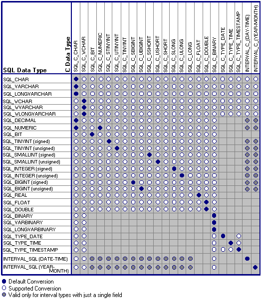

When an application calls SQLFetch, SQLFetchScroll, or SQLGetData, the driver retrieves the data from the data source. If necessary, it converts the data from the data type in which the driver retrieved it to the data type specified by the TargetType argument in SQLBindCol or SQLGetData. Finally, it stores the data in the location pointed to by the TargetValuePtr argument in SQLBindCol or SQLGetData (and the SQL_DESC_DATA_PTR field of the ARD).
The following table shows the supported conversions from ODBC SQL data types to ODBC C data types. A filled circle indicates the default conversion for an SQL data type (the C data type to which the data will be converted when the value of TargetType is SQL_C_DEFAULT). A hollow circle indicates a supported conversion.
For an ODBC 3.x application working with an ODBC 2.x driver, conversion from driver-specific data types may not be supported.
The format of the converted data is not affected by the Windows country setting.

The tables in the following sections describe how the driver or data source converts data retrieved from the data source; drivers are required to support conversions to all ODBC C data types from the ODBC SQL data types that they support. For a given ODBC SQL data type, the first column of the table lists the legal input values of the TargetType argument in SQLBindCol and SQLGetData. The second column lists the outcomes of a test, often using the BufferLength argument specified in SQLBindCol or SQLGetData, which the driver performs to determine if it can convert the data. For each outcome, the third and fourth columns list the values placed in the buffers specified by the TargetValuePtr and StrLen_or_IndPtr arguments specified in SQLBindCol or SQLGetData after the driver has attempted to convert the data. (The StrLen_or_IndPtr argument corresponds to the SQL_DESC_OCTET_LENGTH_PTR field of the ARD.) The last column lists the SQLSTATE returned for each outcome by SQLFetch, SQLFetchScroll, or SQLGetData.
If the TargetType argument in SQLBindCol or SQLGetData contains an identifier for an ODBC C data type not shown in the table for a given ODBC SQL data type, SQLFetch, SQLFetchScroll, or SQLGetData returns SQLSTATE 07006 (Restricted data type attribute violation). If the TargetType argument contains an identifier that specifies a conversion from a driver-specific SQL data type to an ODBC C data type and this conversion is not supported by the driver, SQLFetch, SQLFetchScroll, or SQLGetData returns SQLSTATE HYC00 (Optional feature not implemented).
Though it is not shown in the tables, the driver returns SQL_NULL_DATA in the buffer specified by the StrLen_or_IndPtr argument when the SQL data value is NULL. For an explanation of the use of StrLen_or_IndPtr when multiple calls are made to retrieve data, see the SQLGetData function description. When SQL data is converted to character C data, the character count returned in *StrLen_or_IndPtr does not include the null-termination byte. If TargetValuePtr is a null pointer, SQLGetData returns SQLSTATE HY009 (Invalid use of null pointer); in SQLBindCol, this unbinds the column.
The following terms and conventions are used in the tables: